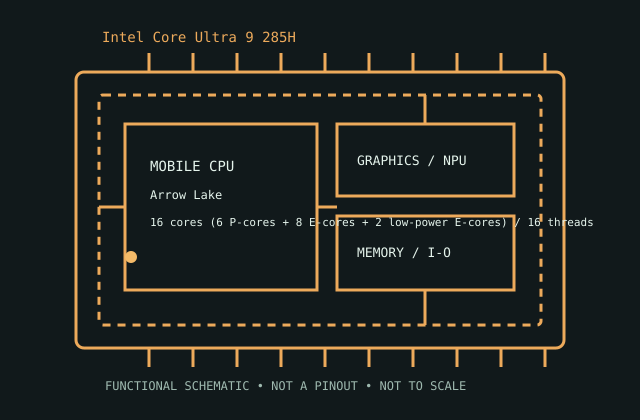

[ INTEL MOBILE GENERATIONS // IDENTIFIED CPU ]
Intel Core Ultra 9 285H
Arrow Lake (Core Ultra Series 2 H-series), 2025. 16 cores (6 P-cores + 8 E-cores + 2 low-power E-cores) / 16 threads; maximum turbo up to 5.40 GHz P-core turbo; 24 MB Intel Smart Cache; 45 W Processor Base Power; 115 W Maximum Turbo Power; FCBGA2049, soldered tiled package; DDR5-6400 or LPDDR5x-8400; memory type and capacity depend on OEM board. Arrow Lake-H is the 2025 high-performance Core Ultra mobile platform; this 285H combines a tiled CPU with integrated Arc-class graphics and NPU.

MODEL IDENTIFICATION: Intel Core Ultra 9 285H. Confirm the complete model suffix and OEM board documentation; this is a soldered mobile package, not a universal replacement part.
Recorded specifications
| Cataloged model | Intel Core Ultra 9 285H |
|---|---|
| Generation / platform | Arrow Lake (Core Ultra Series 2 H-series), 2025. Arrow Lake-H is the 2025 high-performance Core Ultra mobile platform; this 285H combines a tiled CPU with integrated Arc-class graphics and NPU. |
| Core / thread configuration | 16 cores (6 P-cores + 8 E-cores + 2 low-power E-cores) / 16 threads |
| Maximum turbo frequency | up to 5.40 GHz P-core turbo; workload and OEM power/thermal policy determine sustained clocks. |
| Cache | 24 MB Intel Smart Cache |
| Processor power | 45 W Processor Base Power; 115 W Maximum Turbo Power; this published power class is not a laptop-wide power guarantee. |
| Package | FCBGA2049, soldered tiled package |
| Memory interface | DDR5-6400 or LPDDR5x-8400; memory type and capacity depend on OEM board |
| Expansion / platform interface | PCI Express 5.0/4.0; platform exposes lanes and external ports per OEM design |
| Integrated graphics | Integrated Intel Arc 140T graphics (8 Xe-cores; system configuration affects performance) |
| Platform compatibility | Arrow Lake-H notebook platform with an exact BGA2049 board/BIOS, adequate cooling and vendor power limits. Package is soldered and cannot be treated as a socketed field replacement. |
Compatibility and service notes
- Arrow Lake-H notebook platform with an exact BGA2049 board/BIOS, adequate cooling and vendor power limits. Package is soldered and cannot be treated as a socketed field replacement.
- DDR5-6400 or LPDDR5x-8400; memory type and capacity depend on OEM board Memory speed, channel wiring and any memory-on-package configuration must match the system-board design.
- Check the laptop manufacturer's exact model-level CPU list, board revision, BIOS/firmware, thermal assembly and power profile. Package name alone does not guarantee electrical, firmware or mechanical compatibility.
- PCI Express capabilities do not promise a particular connector, storage slot or external port; those are implemented by the notebook platform.
Service and archival notes
Arrow Lake-H is the 2025 high-performance Core Ultra mobile platform; this 285H combines a tiled CPU with integrated Arc-class graphics and NPU. Record the complete processor marking, system SKU, board revision, BIOS, installed memory topology and cooling/power configuration with any service or test observation.
This original SVG is a functional archive schematic only. It is not a die photograph, package image, pinout or installation guide.
Sources & further reading
- Intel ARK exact-model search — Intel Core Ultra 9 285HIntel's searchable processor specification catalog. Confirm the exact suffix and consult the model listing for its published feature limits.
- Intel ARK / Intel processor family referenceIntel official family listing for the generation where available; the Core Ultra page identifies Intel's mobile Core Ultra product family. It is not a substitute for the exact model page.
- Intel product-family overview — Core Ultra processorsManufacturer overview for the product family; laptop implementation and serviceability remain OEM-specific.
At least two official Intel HTTPS references are provided above; verify the exact model against the laptop maker's support documentation before service.